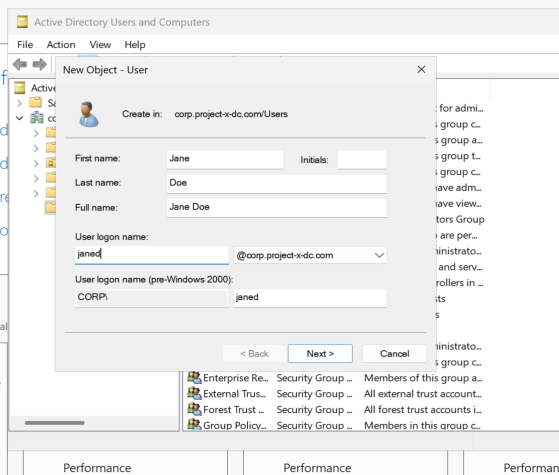
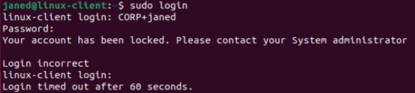
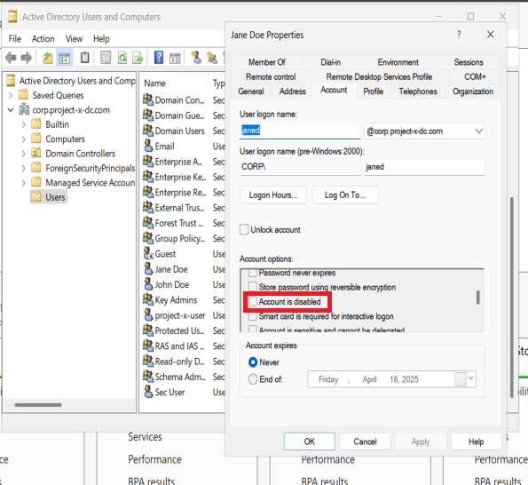
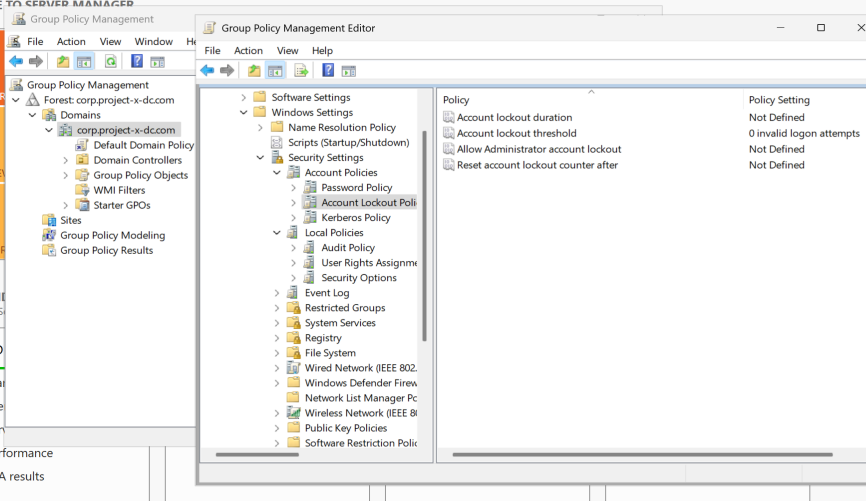
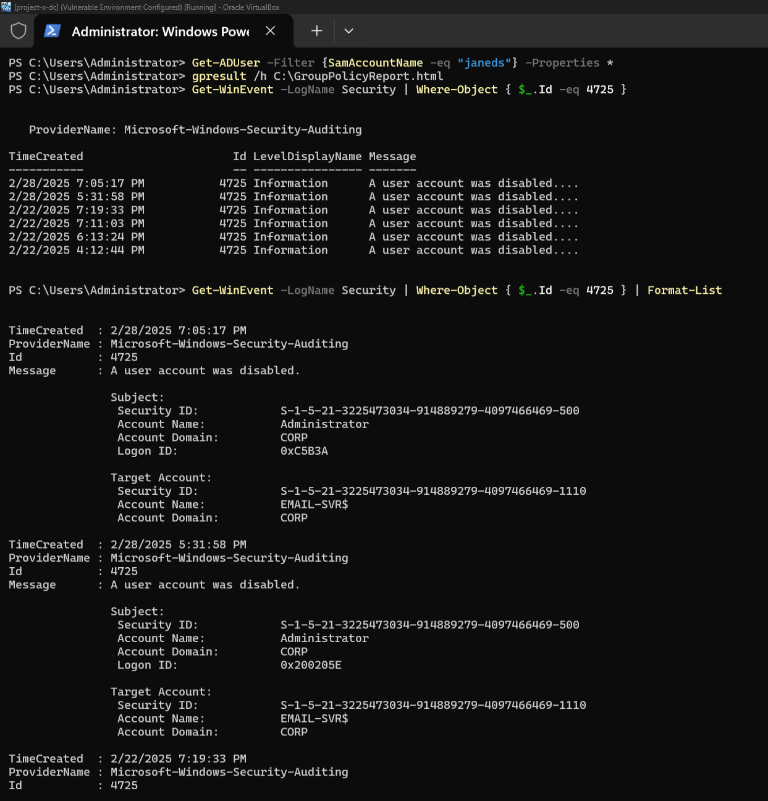
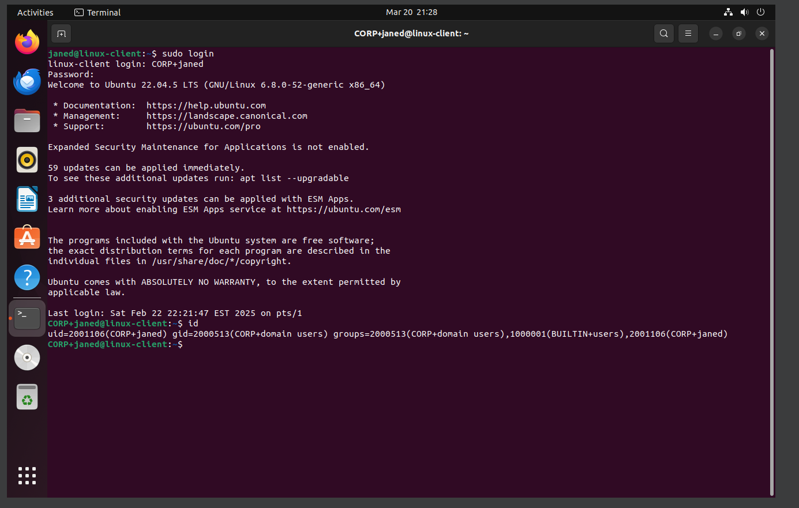
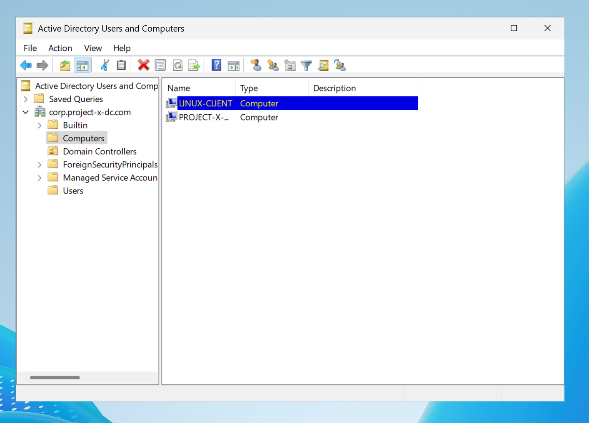

Overview
In this project, I provisioned an Ubuntu Desktop 22.04 workstation and configured it to integrate with a Windows Active Directory (AD) domain, allowing centralized user authentication. This workstation was intended for the user janed, whose account was created and managed from the domain controller.
Configuring Network Settings
After installing the OS, I of course again needed to configure the machine's network settings by assigning it a static IP address (10.0.0.101) and linking it to the Active Directory domain.
Connecting Ubuntu to Active Directory
Since Linux is not native to Microsoft, I had to use third-party libraries to connect to the Domain Controller. I used a service called Samba Winbind, which allows Linux systems to authenticate users against Windows Active Directory and integrate with Windows network environments.
I followed instructions from this guide:
Server World - Samba Active Directory Integration
I laid out the instructions for easy viewing:
- Prior to installing Winbind, I updated the system within the terminal with:
sudo apt update
- Installed the required packages:
sudo apt install realmd sssd sssd-tools samba-common krb5-user packagekit libnss-sss libpam-sss adcli samba-common-bin
Configuring Samba for Active Directory
- Moved the existing Samba configuration file for backup:
sudo mv /etc/samba/smb.conf /etc/samba/smb.conf.org
- Then added the configuration from
this guide
and pasted it into my terminal session, replacing realm and workgroup with CORP.PROJECT-X-DC.COM and CORP:
sudo nano /etc/samba/smb.conf
Configuring Winbind for Authentication
- Added "winbind" to the
/etc/nsswitch.conf file under the passwd and group lines.
sudo nano /etc/nsswitch.conf
Configuring DNS for Active Directory
- I then proceeded to change DNS settings to 10.0.0.5, which is the Domain Controller.
sudo nano /etc/resolv.conf
Joining the Domain with Administrator
- From here, I joined the domain using the administrator account so user janed could sign in with the account that was created in the Active Directory project.
sudo net ads join -U Administrator
I used the same password for all workstation and server virtual machines when prompted to enter. The administrator account for the domain controller was the only one with a different password.
Restarting Winbind
- After joining the domain, I restarted Winbind to ensure authentication services were running correctly.
systemctl restart winbind
Verifying Active Directory Integration
- Displayed Active Directory services information:
net ads info
After running this command, I confirmed that the system could see the LDAP server 10.0.0.5 and the domain name CORP.PROJECT-X-DC.COM.
- Listed all Active Directory users:
wbinfo -u
Several users were already displayed (including janed) because I had already completed my project and am now documenting some of the previously missing steps in my notes.
Adding Jane Doe to Active Directory
- Moving over to the Active Directory Virtual Machine, I added Jane Doe through the DC
server manager dashboard by taking this path:
➝ Going to Tools ➝ Active Directory Users and Computers ➝
Right-clicking on Users ➝ New ➝ Adding Jane Doe’s information and setting
her username as janed@corp.project-x-dc.com.

After creating Jane’s AD account in the Domain Controller, I went back to my Linux client and performed
another restart to clear the Winbind cache and see the changes reflected.
Unexpected Authentication Issue
Things were going relatively smoothly up until this point. However, I reached a major roadblock and spent a considerable amount of time trying to figure out why Jane's account was locked when trying to perform a sudo login.
Although I was entering the correct password, I kept encountering the error message:
Your account has been locked. Please contact your System Administrator.
I tried resetting the original password, restarting both the Domain Controller and the Linux client desktop virtual machines, and reconfiguring various settings — but nothing worked.

Unlocking Jane's Account
Then I realized the answer was right in front of me… I am the system administrator. So I proceeded to focus on the Domain Controller virtual machine.
All I had to do was manually uncheck user janed’s “Account is disabled” checkbox. It appears her account had been locked by default after failed sudo login attempts — even though the correct password was used.
I suspect it may have been related to not retrying sudo -U Administrator commands early on, which could have refreshed authentication.

I wanted to get down to the root cause of the issue, so I performed additional research.
Challenge: Investigating and Resolving Unexpected AD Account Disablement
As shared above, during my cybersecurity project, I encountered an issue where Active Directory (AD) user accounts — including Jane’s — were being unexpectedly disabled. At first, I suspected a typical account lockout due to failed login attempts. However, after reviewing the Account Lockout Policy settings, I confirmed that the accounts were being disabled, not locked.
Investigation Process
- Checked Group Policy for Enforced Disablement Policies
I generated a Group Policy Report to identify any automated domain policies affecting user accounts:
gpresult /h C:\GroupPolicyReport.html
üìÑ View the full Group Policy Report:
CORP_Administrator_Group_Policy_Report.pdf
I also manually navigated through Group Policy Object (GPO) settings:
- Opened Group Policy Management (gpmc.msc)
- Went to Default Domain Policy
- Checked:
→ Computer Configuration
→ Windows Settings
→ Security Settings
→ Account Policies
→ Account Lockout Policy

Finding: No policies were found that automatically disabled user accounts.
- Searched Event Logs for Account Disablement Events
I then checked Windows Security Logs for Event ID 4725, which records when a user account is disabled. This was done using PowerShell:
Get-WinEvent -LogName Security | Where-Object { $_.Id -eq 4725 }
Finding: The logs showed that multiple accounts, including Jane’s, were disabled on different dates.

- Identified the Source of the Disablement
To determine who disabled the accounts, I ran:
Get-WinEvent -LogName Security | Where-Object { $_.Id -eq 4725 } | Format-List
Finding: The logs confirmed that the Administrator account manually disabled several user accounts. This ruled out system-enforced restrictions or automated scripts.
Root Cause: Manual Administrator Action
The logs definitively showed that the domain Administrator account manually disabled Jane’s account. No automated lockout or enforcement was responsible.
Resolution Steps
- Confirmed that Jane’s account was disabled by the Administrator via Event Logs.
- Re-enabled Jane’s account using PowerShell:
Enable-ADAccount -Identity janeds
- Successfully logged into the domain from the Linux client.
- Confirmed a new home directory:
/home/CORP/janed
- Ran
id to confirm domain connection under CORP.

To finalize confirmation, I returned to the Domain Controller’s Active Directory Users and Computers interface.

Success! Jane’s Linux machine was now fully integrated into the enterprise domain and functioning as expected.